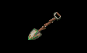

MAP OF TYR-SOG AREA
 You will now stumble into your first TRAP. If you think this one is difficult, just wait!
This one is too easy to be true: First make Owyn use the INVITATION Spell
You will now stumble into your first TRAP. If you think this one is difficult, just wait!
This one is too easy to be true: First make Owyn use the INVITATION Spell
(at Cost = 1) on the
Moredhel Spellcaster [Combat 16] - he will barge
into the Trap Pole Current and die. Then make Gorath navigate through the Trap. (Remember: Push the HEART Button if you want a character to REST.)
 In a valley to the South find the SHADOW Chest, containing the EYES OF ISHAP Scroll for Owyn
and a SPYNOTE.
In a valley to the South find the SHADOW Chest, containing the EYES OF ISHAP Scroll for Owyn
and a SPYNOTE.
Back on the Main Road, go on East. The House at the end of the path leading North is empty, but a Southern valley contains
the CANDLE Chest (don't miss it!) - containing a Blessed Moredhel Lamprey, a SPYNOTE, and TWO Scrolls for Owyn
(STARDUSK and FLAMECAST).
Now go East until you reach the bridge. Cross it. North of the bridge you'll find a Graveyard,
and a Chest. You can check the Chest, but the Graveyard will have to wait until you've found a
Shovel. Go East towards the crossroads.
The East road leads to the Temple of Dala and Highcastle. At this stage you are hardly ready for
this arduous journey! The South road leads to Loriel and the Temple of Ishap. If you choose to
go there, you will have to fight three Moredhel Warriors [Combat 12]
before you cross the bridge, and two Moredhel Warriors [Combat 11]
after you've crossed it. Your best choice for the time being is to head North, into the town of Tyr-Sog.
In THE THREE HILLMEN Shop you won't be able to sell any Weapons or Armor, but if you're holding
any Shells, Moredhel Brooches, etc., sell them now. Buy a Shovel and a Practice Lute, and of course
a Whetstone and an Armorer's Hammer if you need them. Extra Picklocks might be helpful as well.
Your best choice for the time being is to head North, into the town of Tyr-Sog.
In THE THREE HILLMEN Shop you won't be able to sell any Weapons or Armor, but if you're holding
any Shells, Moredhel Brooches, etc., sell them now. Buy a Shovel and a Practice Lute, and of course
a Whetstone and an Armorer's Hammer if you need them. Extra Picklocks might be helpful as well.
MAP OF TYR-SOG AREA
If you can afford the Practice Lute give it to Owyn (best Barding Skill). Now USE the Lute until it
disappears. This will improve Owyn's Barding Skill, especially if you make sure that ONLY his Barding
Skill is SELECTED, before he starts practising!
 Before leaving Tyr-Sog, try going North and meet Finn, who will tell you to return.
Now head back West. Revisit the Graveyard near the bridge. Now that you have a Shovel, you will
find WEEDWALKERS in one of the Graves. Don´t touch the southernmost stone (Baby Irisa) - unless you want to
fight a Shade [Combat 19]. Finally retrace your steps West towards Yabon, where
you started. You can sell surplus Weapons and Armor in the Yabon Shop. Remember to repair before you sell,
and always make sure your characters are carrying the best!
Before leaving Tyr-Sog, try going North and meet Finn, who will tell you to return.
Now head back West. Revisit the Graveyard near the bridge. Now that you have a Shovel, you will
find WEEDWALKERS in one of the Graves. Don´t touch the southernmost stone (Baby Irisa) - unless you want to
fight a Shade [Combat 19]. Finally retrace your steps West towards Yabon, where
you started. You can sell surplus Weapons and Armor in the Yabon Shop. Remember to repair before you sell,
and always make sure your characters are carrying the best!
 You will not be able to afford any of the higher-priced items at first, but the Whetstone and
Armorer's Hammer will tempt you. Remember: You'll get a better price for Weapons and Armor if you repair
before you sell.
You will not be able to afford any of the higher-priced items at first, but the Whetstone and
Armorer's Hammer will tempt you. Remember: You'll get a better price for Weapons and Armor if you repair
before you sell. Go on North. A path towards North off the Main Road will bring you to the SPIDER Chest. Go back to the Main Road,
and head East. Soon you will run into your first Enemies, two Moredhel Warriors [Combat 14]. Kill them, and don't forget to
search their bodies. No go on East. Where a path branches off the Main Road towards South, you will have to
fight a lone Moredhel Warrior [Combat 13]. Now take the Southern Path, and enter the House.
Go on North. A path towards North off the Main Road will bring you to the SPIDER Chest. Go back to the Main Road,
and head East. Soon you will run into your first Enemies, two Moredhel Warriors [Combat 14]. Kill them, and don't forget to
search their bodies. No go on East. Where a path branches off the Main Road towards South, you will have to
fight a lone Moredhel Warrior [Combat 13]. Now take the Southern Path, and enter the House. Talk to Brother Jeremy, and accept your
first Quest: Find a Chest just West of Hawk's Hollow on the southern side of a small hill. Find out what is in the
Chest, and Jeremy will give you a copy of Thiful's Bird Migrations, a book that will increase your characters' skills.
(You're not supposed to solve the Quest NOW, but keep it in mind.)
Talk to Brother Jeremy, and accept your
first Quest: Find a Chest just West of Hawk's Hollow on the southern side of a small hill. Find out what is in the
Chest, and Jeremy will give you a copy of Thiful's Bird Migrations, a book that will increase your characters' skills.
(You're not supposed to solve the Quest NOW, but keep it in mind.) South of Yabon, keep to the Main Road, until you spot the DIE Chest on your right. Slightly
farther South you will meet Squire Phillip, and be able to converse with him. He will give you
some basic tips. (If you've been to the Temple of Dala, and accepted the Grain Quest, you can
also ask him about GRAIN. He will tell you where to find the Bag of Grain. Make a note of it,
since you will have to wait until Chapter 2 or 3 in order to solve this Quest.)
Don't miss an ordinary Chest, and a Mound of Dirt in the near neighborhood. Soon you will reach a Western path leading to LaMut. Before you
go all the way into LaMut, look South, and find the LaMut Graveyard. Check out all the graves - a
South of Yabon, keep to the Main Road, until you spot the DIE Chest on your right. Slightly
farther South you will meet Squire Phillip, and be able to converse with him. He will give you
some basic tips. (If you've been to the Temple of Dala, and accepted the Grain Quest, you can
also ask him about GRAIN. He will tell you where to find the Bag of Grain. Make a note of it,
since you will have to wait until Chapter 2 or 3 in order to solve this Quest.)
Don't miss an ordinary Chest, and a Mound of Dirt in the near neighborhood. Soon you will reach a Western path leading to LaMut. Before you
go all the way into LaMut, look South, and find the LaMut Graveyard. Check out all the graves - a  If you know the path, you can actually reach the Brak Nurr without encountering any other
enemies! The Brak Nurr [Combat 05] is quite easy to kill - he can't move and is easily immobilized with
Owyn's DESPAIR THY EYES. Naddur will reward you handsomely, after you've killed the beast. You can not go on to
the Lower Level of the Mac Mordain Cadal in this Chapter.
If you know the path, you can actually reach the Brak Nurr without encountering any other
enemies! The Brak Nurr [Combat 05] is quite easy to kill - he can't move and is easily immobilized with
Owyn's DESPAIR THY EYES. Naddur will reward you handsomely, after you've killed the beast. You can not go on to
the Lower Level of the Mac Mordain Cadal in this Chapter. Explore the Upper Mac thoroughly. There are various Chests to be found.
All the Enemies are Rogues.
There is one Combat with TWO Rogues [Combat 02],
one with THREE Rogues [Combat 01],
one with 4 Rogues [Combat 04],
and one with 3 Rogues and a Rogue Mage (kill him first!) [Combat 03].
Explore the Upper Mac thoroughly. There are various Chests to be found.
All the Enemies are Rogues.
There is one Combat with TWO Rogues [Combat 02],
one with THREE Rogues [Combat 01],
one with 4 Rogues [Combat 04],
and one with 3 Rogues and a Rogue Mage (kill him first!) [Combat 03].


 in order to complete two Quests. Recover Makala's Ruby, and find Brother Jeremy's Chest (see above).
in order to complete two Quests. Recover Makala's Ruby, and find Brother Jeremy's Chest (see above). Stay away from Orno's House, unless you want to catch the Plague (21%). It's nothing to worry
about - if you have Herbal Packs, a night's sleep is all you need to get cured.
If you don't, visit Michele the Healer in Loriel - she will cure you
for 25 Gold Sovereigns, which is much less than any Temple would charge.
Stay away from Orno's House, unless you want to catch the Plague (21%). It's nothing to worry
about - if you have Herbal Packs, a night's sleep is all you need to get cured.
If you don't, visit Michele the Healer in Loriel - she will cure you
for 25 Gold Sovereigns, which is much less than any Temple would charge. WITCH WILINDI'S QUEST can be solved in Chapter 1. After the Trap, go East, and look out for Ockie's House to the North.
Speak to Ockie, who will tell you about the Witch. You will now have to fight
TWO Scorpions [Combat 16]. Next locate Wilindi's house to the South-East.
You will have to fight SIX Scorpions [Combat 17], before you can
approach the house, so make sure you save before the fight!
WITCH WILINDI'S QUEST can be solved in Chapter 1. After the Trap, go East, and look out for Ockie's House to the North.
Speak to Ockie, who will tell you about the Witch. You will now have to fight
TWO Scorpions [Combat 16]. Next locate Wilindi's house to the South-East.
You will have to fight SIX Scorpions [Combat 17], before you can
approach the house, so make sure you save before the fight!


 LET'S MAKE LOTS OF MONEY!
LET'S MAKE LOTS OF MONEY!
 On the Main Road South of
Questor's View you will meet Rowe. He's obviously a traitor, so pay attention to his lies.
If you give him 10 Gold Sovereigns, and he will make clear the location of his BARN (where NAGO
and Friends are waiting for you). Don't bother, you can't miss it.
On the Main Road South of
Questor's View you will meet Rowe. He's obviously a traitor, so pay attention to his lies.
If you give him 10 Gold Sovereigns, and he will make clear the location of his BARN (where NAGO
and Friends are waiting for you). Don't bother, you can't miss it. Before you enter Sarth, talk
to Brother Marc, who is tending a cornfield near the entrance - he will impart lots of
information and (for a small fee) improve Owyn's Casting Skill.
He can also sell you FLAMECAST cheaply. You probably already own it, but you can sell it
at a profit in the Sarth Shop.
Before you enter Sarth, talk
to Brother Marc, who is tending a cornfield near the entrance - he will impart lots of
information and (for a small fee) improve Owyn's Casting Skill.
He can also sell you FLAMECAST cheaply. You probably already own it, but you can sell it
at a profit in the Sarth Shop.
 You can also ENTER the Mines below Sarth by clicking the ENTER hotspot left of the Citadel.
You may not be able to access all parts of it at this stage, but you will meet new Enemies!
You can fight two Spiders [Combat 01 and Combat 03], and three
Scorpions [Combat 03]. The two Moredhel Chests found here contain
interesting Items.
You can also ENTER the Mines below Sarth by clicking the ENTER hotspot left of the Citadel.
You may not be able to access all parts of it at this stage, but you will meet new Enemies!
You can fight two Spiders [Combat 01 and Combat 03], and three
Scorpions [Combat 03]. The two Moredhel Chests found here contain
interesting Items.